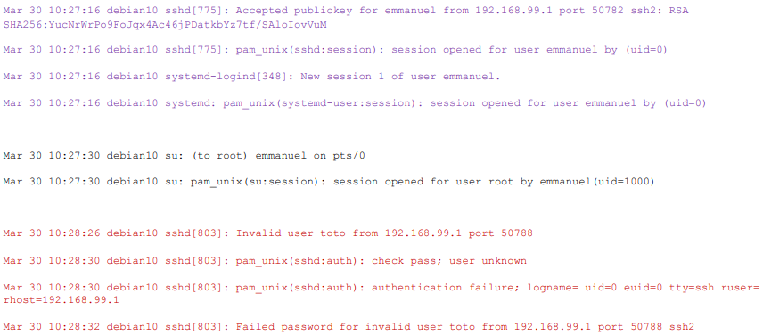
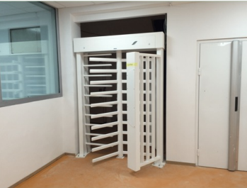
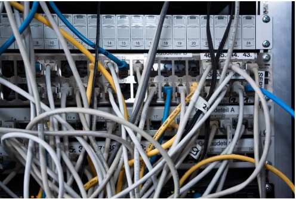
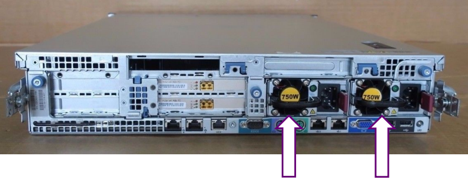
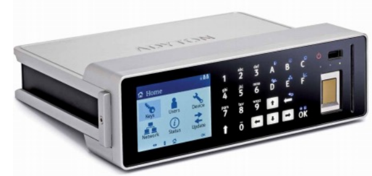
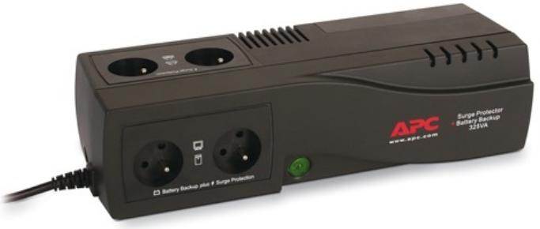
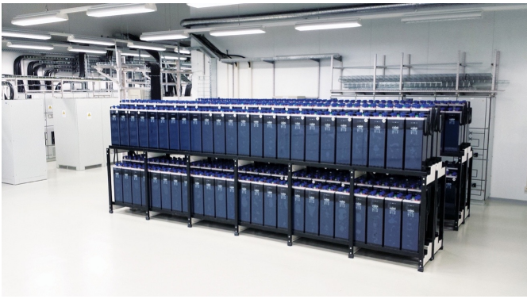
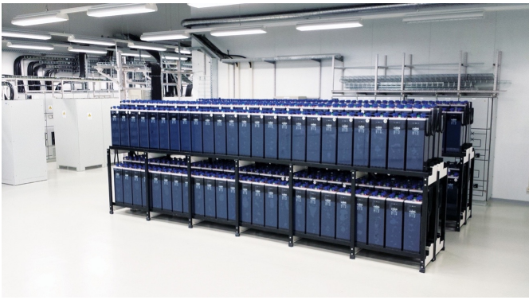

Principes de base de sécurité des systèmes d'information :
Pour atteindre le seuil de réussite, l'étudiant sera capable :
d'expliquer différents concepts liés à la sécurisation des systèmes d'information et de communication.
d'identifier des outils et des technologies de sécurisation des systèmes d'information et de communication appropriés dans un scénario ou un contexte.
Pour la détermination du degré de maîtrise, il sera tenu compte du degré de clarté, de cohérence, de pertinence et de précision des propositions formulées.
Introduction :
Pourquoi faut-il sécuriser les systèmes d'information ?
Parce que c'est la loi : Si dans nos habitudes, individuellement nous ne faisons pas très attention à respecter les lois, il n'en va pas de même pour les entreprises !
Parce que nos clients l'exigent : Nos clients nous transmettent de nombreuses informations et données, ces données peuvent dire beaucoup sur leurs activités, et ils ne veulent pas que leurs concurrents les connaissent.
Parce que nos fournisseurs l'exigent : Comme les clients, les fournisseurs nous donnent des informations et des données qu'ils ne veulent pas voir divulguées.
Parce que nos concurrents nous observent : Nos concurrents sont prêts à nous attaquer si nous ne respectons pas les règles.
Parce que nous devons préserver nos données et nos capacités de traitement pour garantir notre business.
De quoi faut-il nous protéger ?
Plusieurs dangers menacent les systèmes d'information de nos entreprises :
Les malveillances en provenance de l'interne de l'entreprise. Par exemple des personnes mécontentes, des personnes incompétentes...
Les malveillances en provenance de l'extérieur.
Les attaques menées par nos concurrents afin de nous déstabiliser.
Les attaques menées par des entités ennemies (cyber terrorisme, terrorisme d'état...).
L'espionnage industriel ou commercial.
L'utilisation de nos systèmes d'information pour attaquer un de nos partenaires.
Porter atteinte à notre réputation, à notre image de marque.
Structure de la norme ISO27002:2013 :
Politiques de sécurité
Organisation et gestion
Gestion des ressources humaines
Gestion des accès
Cryptographie
Sécurité physique et environnementale
Sécurité opérationnelle
Communications et réseaux
Développement des systèmes d'information et maintenance
Gestion de la relation avec les partenaires
Gestion des incidents de sécurité
Continuité et disponibilité des activités de l'entreprise
Conformité
Les clauses 1 à 5 définissent le cadre normatif.
Les clauses 6 à 19 définissent les contrôles de sécurité.
Sécurité des systèmes d'information :
Objectifs de la sécurité des systèmes d'information :
Les objectifs de l'informatique doivent être alignés sur les objectifs stratégiques de l'entreprise.
Assurer la sécurité des ressources informationnelles.
Assurer des capacités de traitement, de stockage et de communication nécessaire aux objectifs business.
CIA Triad :
Confidentiality - Confidentialité : Assure que l'information n'est pas divulguée, volontairement ou involontairement, à une personne qui n'a pas le niveau de confiance requis.
Integrity - Intégrité : Assure que l'information n'est pas modifiée, volontairement ou involontairement, par une personne qui n'a pas le niveau de confiance requis.
Availability - Disponibilité : Assure que l'information est disponible et accessible quand le business en a besoin.
Concepts dérivés :
Non-répudiation : La non-répudiation garantit que le sujet d'une activité ou d'un événement ne peut nier que l'événement s'est produit. La non-répudiation empêche un sujet de prétendre ne pas avoir envoyé un message, ne pas avoir effectué une action ou ne pas avoir été la cause d'un événement.
Imputabilité : L'imputabilité certifie que l'auteur d'un message, d'un document ou d'une transaction ne peut nier en être l'auteur.
Identification : L'identification est la déclaration d'une identité lors d'une tentative d'accès à une zone sécurisée du système d'information.
Authentification : L'authentification consiste à prouver qu'une identité est bien celle qu'elle prétend être.
Autorisation : Définition des autorisations et des refus d'accès aux ressources et aux objets pour une identité spécifique.
Auditing : Enregistrement dans un fichier journal d'événements les activités des utilisateurs et des programmes dans le système d'information.
Accounting/accountability : Examen du fichier journal d'événements pour vérifier la conformité et les violations des activités dans le système d'information.
Approches scientifiques de la sécurité :
Comment approcher de manière scientifique le concept de sécurité ?
L'enjeu n'est pas de proposer une définition unique qui convient à tous, mais de proposer un cadre de réflexion qui tient compte des différentes sensibilités scientifiques.
Trois dimensions sont présentées dans cette approche :
Dimension sémantique :
Quels sont les sens donnés au mot "sécurité" ?
Le terme "sécurité" est polysémique. Par exemple : sécurité publique, sécurité alimentaire, etc.
La sécurité comme un sentiment (état d'âme, disposition subjective caractérisée par la confiance).
La sécurité comme un état (état de tranquillité, de quiétude).
La sécurité comme une politique (ensemble de décisions de gouvernance de la société).
Dimension épistémologique :
Comment connaître l'objet de réflexion qu'est la sécurité et plus particulièrement la sécurité des systèmes d'information ?
Ontologie : Quelle est la nature de l'objet de réflexion ? Objectif ? Subjectif ?
Épistémologie : Quelle est la nature de la connaissance que nous avons de l'objet de réflexion ? Positiviste ? Interprétativiste ? Constructiviste ?
Méthodologie : Comment acquérons-nous ces connaissances ? Selon des méthodes quantitatives ? Selon des méthodes qualitatives ?
Dimension éthique :
Éthique : Concept philosophique lié à la morale qui vise à mettre en évidence le fait que le respect des valeurs appliquées personnellement ou professionnellement doit avoir une préséance dans toutes les activités humaines.
Quelles sont les valeurs partagées par les membres de cette entreprise ?
Quelles sont mes propres valeurs ?
Une approche scientifique est indispensable pour clarifier le statut des connaissances produites par la recherche.
On considère ici que la sécurité est aussi un sujet des sciences de gestion (économie, organisation, management, etc.).
Quelle gouvernance de sécurité des systèmes d'information ?
Les politiques de sécurité font partie de la gouvernance générale de la sécurité des systèmes d'information. La gouvernance constitue les fondements de la manière dont l'entreprise voit l'alignement de la sécurité sur sa stratégie.
Les politiques de sécurité sont un ensemble de règles qu'il faut suivre pour mettre en oeuvre la gouvernance de sécurité. Ces règles sont fondamentales pour assurer un pilotage de l'entreprise, surtout si elle est fortement dépendante de ses systèmes d'information.
Organisation de la sécurité :
Objectif : Établir un cadre de gestion pour initier et contrôler la mise en oeuvre et le fonctionnement de la sécurité de l'information au sein de l'organisation.
L'entreprise ou l'organisation n'est pas insolée du monde ! Elle a des contatcs avec les autoritéspolitiques et sectorielles. Elle fait partie de chaînes de production de valeurs :
Elle reconnaît la dépendance des activités de l'entreprise aux technologies de l'information.
On aligne la sécurité avec les fonctions internes de l'entreprise (la direction, les Business Units, les fonctions de support (par exemple : GRH)).
On aligne la sécurité avec la mission de l'entreprise, les buts, les stratégies, les objectifs opérationnels, financiers, etc.
La Direction rédige une déclaration de sécurité des systèmes d'information dans laquelle elle marque son intérêt et son engagement dans la protection du capital informationnel de l'entreprise.
La gouvernance de sécurité est un document de la Direction qui contient les sections suivantes :
Les principes de sécurité :
Ce sont les grandes orientations pour protéger les systèmes d'infoamtion.
Il s'agit des grands principes adoptées par la Direction pour assurer la sécurité des données de l'entreprise.
Par exemple : tous les PC, portables, mobiles doivent avoir un antivirus.
Les rôles et les responsabilités :
On définit qui est responsable de quoi pour la protection des systèmes d'information.
Le CEO (Chief Executive Officer) porte la responsabilité ultime de la sécurité de l'entreprise, et donc aussi des données et des informations qui sont traités, stockées ou transférées.
Le CISO (Chief Information Security Officer) est le responsable de la stratégie de sécurité et des protections opérationnelles des systèmes d'information.
Le CIO (Chief Information Officer) est le responsable des équipes IT
Le DPO (Data Privacy Officer) est le responsable de la conformité des données à caractère personnel.
Le Data Owner est le responsable de la classification des données et de leurs utilisations.
Le Data Custodian est le responsable de l'implémentation des protections définies dans les politiques de sécurité.
Le User est un rôle assigné à toute personne qui a accès aux systèmes d'information.
L'Auditor est le responsable qui reçoit et vérifie que les politiques de sécurité sont proprementet effictiveent implémentées de manière adéquate.
Accountable - Approuve : C'est la personne qui est comptable, redevable sur l'avancement de l'action. Il n'y a qu'un et un seul Accountable par action.
Responsible - Réalise : C'est la ou les persones qui réalisent l'action. Il y a au moins un Responsible par action.
Consulted : La ou les personnes que l'on consulte pour obtenir un avis. La personne qui a demandé un avis doit en tenir compte au mieux.
Informed : La ou les personnes doivent être tenues informées, elles doivent recevoir l'information sur la réalisation de l'action.
Activités
Direction
CISO
Security Analyst
Technical Architect
Developpeur
Testeur
Rédiger et maintenir les politiques de sécurité
A
R
C
C
I
I
Gérer les règles de filtrage du Firewall
A
R
C
I
I
Faire les spécifications
A
C
R
R
I
...
Les audits de sécurité :
La responsabilité de l'auditeur interne.
Les politiques de sécurité :
Structure des politiques de sécurité
Politiques de sécurité - Security Policies : Une politique de sécurité est un document qui formalise les règles de sécurité à suivre, les éventuelles dérogations et les actions en cas de non-respect des règles.
Standards de sécurité : Un standard de sécurité est un ensemble de mesures à prendre, d'actions, de points de vérification recommandés pour mettre en place un niveau standard de sécurité. Les standards sont regroupés par th§mes, par exemple le standard de configuration pour les serveurs Microsoft.
Guidelines de sécurité : Les Guidelines sont des lignes directrices qui expliquent de manière générique comment mettre en oeuvre les sstandards de sécurité. C'est un ensemble de recommandations.
Procédures de sécurité : Une procédure de sécurité décrit pas à pas les instructions pour sécuriser un serveur ou une application. Il est important de suivre exactement ces instructions et de les corriger s'il y a des erreurs.
Les politiques de sécurité est un ensemble de règles obligatoires à suivre dans toute l'entreprise.
On peut avoir des dérogations à une ou plusieurs règles d'une politique de sécurité uniquement sur approbation d'un Comité de sécurité ou du Comité de directeurs pour une période déterminée sans jamais de date de fin. La demande de dérogation doit être argumentée. Une dérogation peut/doit être accompagnée de compensatoires. Il peut y avoir un prolongement.
Exemples : politique de sécurité des passwords (mots de passe), politique de classification des documents, postion de gestion des incidents de sécurité, ...
Les mesures compensatoires :
Les mesures compensatoires doivent toujours être en supplément des mesures de sécurité déjà en place.
Les mesures compensatoires peuvent être techniques ou organisationnelles.
Exemple : La politique de mots de passe une longueur d'au moins 10 caractères pour tout mot de passe. Or un programme un peu ancien n'accepte que des mots de passe d'une longueur de 8 caractères. Une dérogation a été acceptée si la mesure compensatoire suivante est mise en place : audit quotidien des login/logout de tous les accès à cette application et informer le CISO des résultats de cette analyse.
Les standards de sécurité :
Les standards de sécurité sont des recommandations de sécurité rédigées par des experts du produit ou du programme.
Les recommandations sont de nature technique (mettre en place un moyen technique pour sécuriser) et/ou organisationnelle (mettre en place une procédure, une responsabilité pour surveiller la sécurité).
Les standards de sécurité ne sont pas obligatoires mail il faut être en mesure d'expliquer pourquoi les recommandations des experts ne sont pas suivies !
Il peut y avoir plusieurs standards de sécurité pour un même produit afin de tenir compte du contexte dans lequel le produit est utilisé ou de son exposition aux risques.
Les guidelines sont des indications supplémentaires pour améliorer la sécurité ou en faciliter l'implémentation.
Il s'agit souvent de Best Practices, c'est-à-dire d'un guide pratique et opérationnel destiné aux spécialistes et aux utilisateurs.
Les guidelines ne sont pas obligatoires.
>Exemple : Guidelines pour mettre en place une gestion des incidents de sécurité d'un nouveau serveur.
Les procédures de sécurité :
Les procédures sont des marches à suivre opérationnelles pour sécuriser un produit ou un programme.
Il s'agit d'actions à réaliser pas-à-pas.
Les procédures sont rédigées par les experts, les ingénieurs système ou les analystes qui connaissent bien le contexte de l'entreprise et les produits.
Les procédures doivent être testées et vérifiées dans des environnements de tests afin de s'assurer de leur fiabilité et de leur efficacité.
Il est obligatoire de suivre les procédures telles qu'elles sont rédigées afin de ne pas introduire de nouvelles erreurs. Si une erreur est détectée dans une procédure, il faut en informer le responsable (celui qui a écrit cette procédure) afin qu'une correction soit apportée.
Structure type d'une politique de sécurité :
Introduction : Pourquoi cette security policy ? Que couvre-t-elle et que ne couvre-t-elle pas ?
Scope : À quels thèmes ou services s'applique-t-elle ? À qui s'applique-t-elle ? Qui sont les utilisateurs cibles ?
Security Rules : Quelles sont les règles à suivre dans les différents cas ? 1 règle = 1 instruction, ligne ou paragraphe.
Conséquences si les règles sont suivies : Comment vérifier que les règles sont suivies ? Quelles sont les actions quand les règles ne sont pas suivies ?
Question - Politique de sécurité :
Qu'est-ce qu'une politique de sécurité des passwords pour une entreprise qui traite de nombreuses données dans ses systèmes informatiques ?
À quoi faut-il penser ?
Les règles générales, applicables dans les cas les plus courants.
Les règles particulières.
Les différents types d'utilisateurs et leurs mots de passe :
Les comptes d'utilisateur.
Les comptes génériques → comptes qui sont utilisés par un groupe de personnes dans l'entreprise (par exemple la réception).
Les comptes applicatifs ; comptes qui ne sont utilisés que pour des applications et qui n'ont généralement pas d'accès interactifs (par exemple : ssh).
Les comptes administratifs → comptes des administrateurs système qui ont des droits généralement très puissants dans le système d'information.
Scope : Cette politique de sécurité concerne les comptes et mots de passe de la bureaucratique.
La durée de vie maximale du mot de passe: 90 jours.
La durée de vie minimale du mot de passe : 1 heure.
Nombre de tentatives avant blocage : 5.
Déblocage après 60 minutes.
Déblocage : procédure → double vérification.
Pas de données personnelles.
Pas de dictionnaire →.
Rotation minimale de 5 mots de passe.
Premier mot de passe : au service informatique du support.
Changement obligatoire au premier mot de passe.
Activation le premier jour de travail.
Désactivation le jour de départ.
Absence de longue durée :.
Exceptions :
→ procédure de demande de dérogation (dans toutes les langues et accessible sur l'Intranet).
La gestion des identités et des accès :
Il s'agit bien ici des deux faces d'une même problématique de gestion des accès aux systèmes d'information. Elle vise à accorder les accès aux personnes qui peuvent les avoir pour des raisons de fonctions ou de rôles dans l'entreprise.
La gestion logique des accès en Cybersécurité concerne la régulation et la surveillance des autorisations d'accès aux systèmes, applications et données informatiques. Elle implique l'administration et la gestion des identités numériques, définissant qui a le droit d'accéder à quelles ressources et dans quelles conditions. Cette approche comprend la mise en place de contrôles d'authentification robustes, tels que les mots de passe, les codes PIN, les certificats numériques ou les systèmes biométriques, afin de vérifier l'identité des utilisateurs. De plus, elle englobe la délimitation des privilèges d'accès en fonction des rôles et des responsabilités de chaque utilisateur, limitant ainsi l'accès aux informations sensibles uniquement à ceux qui en ont besoin. La gestion logique des accès vise à réduire les risques de compromission des données en assurant que seules les personnes autorisées puissent accéder aux ressources et aux informations appropriées, contribuant ainsi à renforcer la Cybersécurité globale d'une organisation.
Logical Access Control : Principes de gestion des accès logiques au système d'information :
Principaux concepts de l'Access Control :
Identification
Authentification
Autorisation
Audit et suivi
Identification :
L'identification est le processus par lequel un utilisateur du système d'information déclare son identité aux systèmes d'information.
Les moyens :
Identifiant personnel, user-id, login, ...
Smart card, ...
Les utilisateurs doivent avoir un identifiant personnel unique.
Les types d'identifiants :
Les identifiants personnels
Les identifiants génériques
Les identifiants applicatifs
Les identifiants administratifs
Les différences entre identifiant et compte (voir plus haut) :
Un identifiant est une chaîne de caractères ou un numérique unique associé à un compte.
Un compte contient l'identifiant et toutes les informations nécessaires pour gérer les utilisateurs (date début, date fin, nom, prénom, ...).
Authentification :
L'authentification vérifie l'identité du sujet (l'utilisateur) afin de vérifier qu'il/elle est bien la personne qu'il/elle prétend être.
Le processus d'authentification utilise un ou plusieurs facteurs pour vérifier que la personne est bien qui elle dit être. Par exemple : mot de passe.
Les techniques d'authentification doivent être suffisamment robustes pour garantir la validité de l'identifiant.
Il est important d'évaluer les mécanismes d'authentification dans le contexte où ils sont implémentés. Un serveur exposé aux attaques venant de l'Internet doit être plus robuste que pour un serveur qui ne l'est pas.
Trois catégories de facteurs d'authentification :
Something you know : Password, passphrase, PIN code
Something you have : Memory card, smartcard, USB Drive, hardware token
Something you are or something you do : Caractéristiques physiques d'une personne ou la biométrie :
Fingerprint, retina pattern, iris pattern, hand geometric
Keystroke dynamic, behavorial biometrics
Il est parfois nécessaire d'utiliser plusieurs facteurs d'authentification en même temps pour les systèmes.
Two-factor authentication - authentification à 2 facteurs : Utilisation d'une combinaison de 2 méthodes d'authentification différentes (mot de passe + biométrie).
Strong authentication - authentification forte : Utilisation d'une combinaison de 2 ou plus méthodes d'authentification différentes (mot de passe + a one-time password (OTP)).
L'authentification forte est souvent associée au Triple-A (Authentification, Autorisation et Audit).
Autorisation :
L'autorisation est un processus lors duquel on attribue à l'utilisateur les permissions sur les ressources (c'est-à-dire ce qu'il peut faire et ses droits d'accès).
L'autorisation est réalisée après l'identification et l'authentification.
Zero Trust Principle :
Never trust, always verify :
Ne jamais faire confiance à aucune source : une personne, un service, une machine.
Chaque demande est traitée comme si elle provenait d'une source dangereuse.
La source doit être authentifiée, autorisée et cryptée.
Principle Of Least Privilege (POLP) :
Principe du moindre privilège.
On accorde le minimum de droits d'accès pour que l'utilisateur puisse travailler.
Supposition de compromission :
La sécurité est continuellement menacée et une attaque peut survenir à tout instant.
Surveillance continue et mesures proactives et préventives.
Principe de Segregation of Duties :
Ne pas accorder des droits d'accès qui sont mutuellement exclusifs.
Principe de segmentation et microsegmentation :
Toujours séparer les environnements physiques et logiques qui ont des niveaux de sécurité différents.
Toujours séparer les services liés à des business et des activités différents.
Mise en oeuvre du POLP :
Réaliser un audit des privilèges
Définir les rôles
Restreindre les accès au niveau administrateur. Par exemple : pas de local admin.
Mise en place d'autorisations basées sur les rôles
Mettre en place une surveillance des accès automatisée
Examiner et revoir les droits d'accès régulièrement
Il faut enregistrer les événements d'authentification et d'autorisation dans un fichier journal.
Il faut enregistrer tous les événements réussis ou échoués.
Il faut enregistrer les informations de contexte des événements :
Date - heure
Le serveur ou l'application
Le PC ou l'équipement à partir duquel l'utilisateur s'est authentifié
L'analyse des fichiers journaux permet de détecter les accès frauduleux, les tentatives d'attaques.
Protection des fichiers journaux : éviter la destruction volontaire ou involontaire des événements d'audit.
Exemple de fichier journal /var/log/auth.log :

Privileged Access Management (PAM) :
Gestion des comptes à privilèges élevés :
Administrator, root, ...
Les comptes à privilèges possèdent des droits d'accès élevés et peuvent effectuer des actions sensibles sur les systèmes et les données.
Risques des comptes à privilèges : Les comptes à privilèges sont des cibles de cyberattaques, car leur compromission peut entraîner des accès non autorisés à des ressources critiques et la fuite de données sensibles.
C'est une stratégie pour gérer, contrôler et surveiller les activités des comptes à privilèges (création, suppression, désactivation).
Traçabilité : Toutes les commandes réalisées avec ces comptes.
Principes :
Gestion des mots de passe privilégiés :
Stocker et protéger les mots de passe des comptes à privilèges dans des coffres-forts sécurisés.
Automatise la rotation des mots de passe pour réduire le risque de compromission.
Contrôle d'accès basé sur les rôles (RBAC) :
Limite l'accès aux comptes privilégiés en fonction des rôles et responsabilités des utilisateurs.
Assure que seuls les utilisateurs autorisés peuvent accéder à des comptes spécifiques.
Session Management :
Enregistrer les sessions des comptes à privilèges pour surveiller les activités et détecter tout comportement suspect.
Permet de visualiser, enregistrer et reproduire les sessions pour des audits et des enquêtes.
Audit et Reporting : Générer des rapports sur les activités des comptes à privilèges, facilitant ainsi la conformité avec les réglementations de sécurité (par exemple PCI-DSS).
Défis :
Single point of failure : Si le système PAM est compromis, c'est toute la sécurité qui est en danger.
Complexité de mise en oeuvre : La gestion des comptes à privilèges dans les grandes organisations peut être complexe et nécessite des ressources importantes.
Équilibre entre sécurité et accessibilité : Trop de restrictions peuvent ralentir les opérations, tandis qu'une sécurité insuffisante peut exposer l'organisation aux cyberattaques.
Gestion des comptes fantômes : Les comptes à privilèges oubliés ou non documentés représentent un risque important pour la sécurité.
Une identité est un ensemble d'informations qui décrivent qui est la personne qui doit avoir accès au système d'information de l'entreprise.
Le concept d'identité s'applique à toutes les personnes qui ont un contrat avec l'entreprise :
Les employés définitifs et temporaires,
Les ouvriers,
Les cadres, la direction...
Le concept d'identité s'applique à toutes les personnes qui travaillent pour une entreprise qui a un contrat de fournisseur avec l'entreprise :
Les consultants,
Les intervenants pour la logistique,
Les intervenants dans le cadre de supports, de services, d'assistances...
Le concept d'identité s'applique aussi à toutes les personnes qui sont en contact de manière temporaire avec l'entreprise :
Les visiteurs,
Les candidats dans le cadre de recrutement,
Les stagiaires.
Objectifs :
Identifier avec certitude les personnes et gérer les informations les concernant dans le respect des règlements.
Donner les bons accès aux personnes pour qu'elles puissent travailler efficacement.
Gérer efficacement ces accès tous les jours :
Confidentialité
Intégrité
Disponibilité
Qui doit avoir quels accès à quel système d'information aujourd'hui ?
Défis :
Qui est la source autoritaire d'informations sur les identités ?
Comment protéger les informations des identités dans le respect des réglementations (par exemple : GDPR) ?
Comment maintenir les informations sur les identités ?
Quelles informations collecter ?
Comment les collecter et vérifier qu'elles sont exactées ?
Comment stocker ces informations ?
Comment sécuriser les informations sur les identités ?
Confidentialité
Intégrité
Disponibilité
Access Management :
Objectif : Définir une représentation standard des accès et des permissions sur les ressources.
Assurance qualité : Il faut garantir que les accès et les permissions dans le système d'information sont alignés sur la référence des accès.
La classification des informations, des données et des documents :
Comment appliquer le bon niveau de sécurité aux documents ? Quelles sont les mesures de protection pour les documents qui contiennent des informations et des données sensibles ? Dans cette partie du cours, nous abordons les principes de classification.
Les objectifs des principes de classification :
Comprendre les étapes du processus de classification et de déclassification.
Pourquoi classer les données ?
Quelles sont les classes des données ?
Comment identifier une donnée confidentielle de celles qui ne le sont pas ?
Pourquoi une donnée est confidentielle et une autre ne l'est pas ?
Qui décide si une donnée est confidentielle ?
Qu'est-ce que la classification des données ?
Définition : La classification des données est le processus consistant à organiser les informations en catégories basées sur leur niveau de sensibilité afin d'assurer une protection appropriée.
Classer une donnée consiste à la mettre dans une catégorie de sécurité.
Principes de classification de données :
La donnée classée contient un Label (étiquette, c'est-à-dire un attribut de l'information) qui indique sa classe.
Toutes les données de l'entreprise doivent être classées.
Il faut pouvoir appliquer le contrôle de sécurité approprié.
L'entreprise doit définir des classes de données.
La décision est validée par le Comité de directeurs.
La classification doit être communiquée à toute l'entreprise.
L'entreprise doit s'assurer que les données sont classées correctement : audit et configuration du système d'information.
La classification des données :
Il faut établir une classification des données pour toute l'entreprise.
La classification des données peut être différente d'une entreprise à l'autre.
Toutes les entreprises n'ont pas les mêmes niveaux d'exigence de protection des données.
Il faut adapter la classification à l'entreprise.
La classification des données doit être validée par le Comité des directeurs.
Secteurs d'activité avec un haut niveau de sécurité :
Banques,
Entreprises du secteur de l'énergie,
Armées et entreprises de sécurité,
Aéronautique et astronautique,
Télécommunication,
...
La classification des données en cybersécurité est cruciale pour garantir une protection adéquate contre les menaces numériques. Elle repose souvent sur plusieurs niveaux, allant de la classification publique à la plus sensible :
Classification
Description
Exemples
Secret
Les données sont très sensibles.
Négociations de la vente de l'entreprise.
Négociations avec les syndicats.
Confidentiel
Les données sont confidentielles et elles ne peuvent pas être communiquées en dehors du département qui les utilise ou les génère.
Les fiches salaires des employés.
Les schémas du réseau informatique de l'entreprise.
Sensible
Les données sensibles pour l'entreprise ou l'organisation ont un accès restreint (par exemple : les informations sur les clients).
Données commerciales de l'entreprise ou de l'organisation.
L'organisation interne d'un département de recherche et développement.
Interne
Les données ne sont pas sensibles, mais elles ne doivent pas être communiquées à l'extérieur de l'entreprise.
Les documents de projets du département informatique.
Les notes de services, le règlement d'ordre intérieur.
Publique
Les données peuvent être communiquées à l'extérieur de l'entreprise.
Les appels d'offre, les offres d'emploi.
Les annonces publicitaires.
Les données publiques :
Ce sont des informations accessibles à tous, sans restriction d'accès ni besoin de confidentialité.
Caractéristiques :
Aucune protection spéciale requise pour la confidentialité, mais l'authenticité doit être garantie.
Libre diffusion à l'intérieur comme à l'extérieur de l'organisation.
Impact négligeable en cas de divulgation, mais l'impact peut être important en cas de falsification.
Exemple : Rapport Annuel Financier d'une entreprise publié sur un site web public, destiné aux actionnaires, médias, et au grand public.
Importance : Bien que ces données ne soient pas sensibles, elles doivent être correctement gérées pour garantir qu'elles restent à jour et exactes.
Les données sensibles :
Les données sensibles désignées par la loi et les règlements. Par exemple : le GDPR → les données à caractère personnel.
Les données commercialement sensibles : Il s'agit de données sensibles pour le business de l'entreprise ou pour celui de ses partenaires (clients, fournisseurs, parties prenantes). Par exemple : les données du plan marketing, les accords avec les fournisseurs.
Toutes les autres données que l'entreprise a décidé de désigner sensibles : L'entreprise peut toujours décider, sans justification, qu'une donnée est sensible pour elle. Par exemple : les horaires de transport d'une entreprise de déménagement d'objets d'art.
Les données confidentielles :
Ce sont des informations dont la divulgation non autorisée pourrait causer un impact significatif à l'organisation.
Caractéristiques :
Accès strictement limité à des personnes autorisées.
Nécessite des mesures de sécurité renforcées (chiffrement, contrôle d'accès).
Peut avoir des conséquences financières, juridiques ou stratégiques en cas de fuite.
Exemple : Stratégie de Développement de Produits pour une entreprise technologique, incluant des détails sur des brevets en cours et des innovations à venir.
Importance : La gestion des données confidentielles nécessite des politiques de sécurité strictes pour minimiser les risques de divulgation ou d'espionnage industriel.
Les données secrètes :
Ce sont des informations d'une importance critique, dont la divulgation non autorisée peut causer un impact catastrophique à l'organisation, à un gouvernement ou à la sécurité nationale.
Caractéristiques :
Accès extrêmement restreint à quelques personnes spécifiquement autorisées.
Mesures de sécurité strictes : chiffrement, surveillance renforcée, audits réguliers.
Les fuites peuvent entraîner des crises majeures ou des atteintes graves à la sécurité des personnes et de l'entreprise, de l'organisation ou de la société.
Exemple : Codes de Lancement de Missiles Nucléaires ou Plans Stratégiques Militaires d'un gouvernement.
Importance : Une protection rigoureuse et continue est nécessaire pour éviter des conséquences potentiellement dévastatrices, nécessitant des procédures d'accès ultra-sécurisées.
Les données à caractère personnel :
Le GDPR donne les critères pour identifier les données à caractère personnel.
Les données publiques sont accessibles à tous et ne représentent généralement aucun risque en cas de divulgation. En revanche, les données confidentielles, telles que les informations personnelles ou les secrets commerciaux, nécessitent une protection rigoureuse. Les données sensibles, comme les données médicales ou gouvernementales, exigent des mesures de sécurité encore plus strictes en raison de leur nature critique. Cette classification permet d'appliquer des stratégies de sécurité adaptées à chaque niveau, réduisant ainsi les risques de compromission ou de fuite de données sensibles.
Une échelle de classification est proposée avec les niveaux suivants, mais cette échelle peut être adaptée en fonction des spécificités de l'entreprise :
secret,
confidentiel,
interne,
publique.
Les principes fondamentaux :
Identification et catégorisation : Il s'agit d'identifier les données et de les classer en différentes catégories en fonction de leur valeur, de leur sensibilité et de leur impact potentiel en cas de divulgation.
Niveaux de classification : Les données sont généralement classées en plusieurs niveaux, tels que public, confidentiel, secret et très secret, en fonction de leur sensibilité et de la nécessité de protection.
Définition de politiques de sécurité : Chaque niveau de classification a ses propres politiques de sécurité, dictant les mesures de protection appropriées, comme le chiffrement, les contrôles d'accès stricts ou la surveillance accrue.
Gestion du cycle de vie des données : La classification des données implique également la gestion appropriée du cycle de vie des informations, de la création à la suppression sécurisée, en passant par le stockage, l'accès et le partage.
Sensibilisation et formation : Il est essentiel de former le personnel à comprendre et à appliquer correctement les politiques de classification des données pour garantir une protection adéquate.
Évaluation continue et révision : Les politiques de classification doivent être régulièrement réévaluées pour s'adapter aux évolutions technologiques, aux nouvelles menaces et aux changements dans la valeur des données.
Les Security Controls :
Un Security Control ou contrôle de sécurité est un moyen technique ou organisationnel qui permet d'appliquer le niveau de sécurité attendu.
Contrôle de sécurité technique :
Antivirus
Système d'authentification des utilisateurs
Firewall
...
Contrôle de sécurité organisationnel :
Désigner une personne responsable pour analyser quotidiennement les tentatives d'attaque.
Mettre en place des indicateurs de sécurité et les analyser régulièrement.
Mettre en place une procédure de gestion des incidents de sécurité.
La classification des données et les Security Controls :
Les principes du "Need to Know" et du Moindre Privilège :
Need to Know : Les utilisateurs n'ont accès qu'aux informations dont ils ont besoin pour accomplir leurs tâches.
Principe du Moindre Privilège ou Least Privilege : Les utilisateurs doivent avoir le minimum de droits et d'accès requis pour effectuer leur travail.
Les contrôles de sécurité doivent être adaptés pour assurer le niveau de sécurité attendu.
Chaque classe de données dispose d'un ou plusieurs contrôles de sécurité.
Les protections doivent être décrites dans les politiques de sécurité (Security Policies), c'est-à-dire la politique de classification des données/informations/documents.
La protection des données :
Classification
Security Control (exemples)
Secret
les documents peuvent être stockés uniquement s'ils sont cryptés.
Les documents ne peuvent pas être imprimés sur une imprimante en réseau ou partagée.
Le mot "secret" doit être imprimé sur toutes les pages.
Le responsable de la sécurité doit tenir un registre des documents secrets de l'entreprise.
Confidentiel
Les accès aux documents doivent être tracés.
La liste des personnes qui peuvent avoir accès est inscrite sur le document.
Le mot "confidentiel" doit être imprimé sur toutes les pages.
Le document peut être partagé dans le département.
Sensible
Les accès sont restreints, des audits sont réalisés régulièrement pour identifier les éventuelles fuites d'information.
Interne
Le document peut être partagé dans l'entreprise.
Publique
Le document peut être diffusé librement selon les recommandations du directeur ou du manager responsable de la communication.
Propriété des documents :
Tous les documents de l'entreprise doivent avoir un "propriétaire". C'est difficile à mettre en oeuvre dans la pratique ! Beaucoup de documents sont "orphelins", on ne sait plus à qui ils appartiennent.
Le propriétaire du document doit classer son document. C'est lui qui a la responsabilité de déterminer si le document est secret, confidentiel, interne ou public.
Les processus de gestion de la classification :
La classification des données est dynamique :
Des données changent de classe (avec le temps). Par exemple : un document confidentiel jusqu'à une certaine date.
Les classes peuvent évoluer avec les activités de l'entreprise :
Nouvelles exigences.
Exigences obsolètes.
Nouvelles technologies.
Nouvelles données à traiter, transmettre ou stocker.
Recommandations de conformité : ISO27001, PCI-DSS, ... Les étapes de mise en oeuvre :
Définir des politiques claires de classification des données.
Sensibilisation et formation des employés sur l'importance de la classification.
Utiliser des outils automatisés pour classifier et étiqueter les données.
Auditer régulièrement les données classifiées pour garantir la conformité.
Processus de gestion et cas d'utilisation (Use Cases) :
Création d'un document classifié.
Modification d'un document classifié.
Changement de classification d'un document.
Divulgation d'un document classifié.
Réponse aux incidents sur la confidentialité/intégrité des documents.
Conclusion :
La classification des données est essentielle pour protéger les informations en tenant compte de leur sensibilité.
Il est crucial de respecter les niveaux de classification et d'appliquer le principe du moindre privilège.
Une gestion efficace des données classifiées réduit les risques de sécurité et améliore la conformité aux réglementations.
La sécurité physique des systèmes d'information :
Dès qu'on a accès physiquement aux systèmes d'information, ceux-ci sont en danger, car il est alors possible d'accéder au matériel qui contient physiquement les données et les informations, et de désactiver les protections en place. Dans cette partie, nous abordons les principes de protection physique des différents types de matériel qui constituent les systèmes d'information : serveurs, équipements réseau, PC et appareils mobiles.
La sécurité physique est une composante essentielle de la cybersécurité, visant à protéger les infrastructures matérielles et les ressources physiques qui soutiennent les systèmes informatiques. Elle englobe des mesures de protection telles que le contrôle d'accès aux locaux, la sécurisation des serveurs et équipements, la surveillance des installations, et la gestion des risques liés aux menaces physiques, comme le vol, la perte de matériel ou les dommages accidentels. L'objectif est d'empêcher l'accès non autorisé à ces ressources, ce qui pourrait compromettre la sécurité des données stockées ou des opérations informatiques. En garantissant la sécurité physique, les organisations renforcent la résilience de leurs systèmes et complètent les stratégies de protection numérique, contribuant ainsi à une cybersécurité globale plus solide.
Introduction :
L'importance de la sécurité physique :
Les personnels,
Matériel physique (computers, network devices, backup tapes, hard disks...)
Matériel software, licences
Documentations :
Plans du data center et de l'entreprise,
Fonctionnement des installations,
Planning des interventions, suivi des incidents et des problèmes
...
Situations du matériel à protéger :
Dans le data center,
Dans le périmètre de l'entreprise,
Hors du périmètre de l'entreprise,
Lors des déplacements du personnel.
Protection global du Data center et des locaux de l'entreprise, surtout ceux qui sont utilisés par les opérateurs des systèmes d'information.
Protections particulières d'un équipement spécifique.
Menaces physiques :
Vols de matériels (hardware, software, network, ...)
Accès aux systèmes d'information
Accès aux systèmes de télécommunication :
Filaire,
Wifi,
Radio, satellite.
Destructions volontaires, malveillance, attentats
Destructions involontaires :
Accidents (incendies, inondations, autres types d'accidents)
Erreurs humaines (ignorance, incompétence, manque de formation, ...). Par exemple : laisser la porte du data center ouverte
Attaques ciblées complexes : Attaques mettant en oeuvre plusieurs catégories de moyens. L'accès physique fait partie d'un plan d'attaque plus large.
Il faut tenir compte de l'ensemble de l'environnement et de ses menaces :
Situation géographique
Visibilité et accès aux sites
Désastres naturels
Conception des bâtiments
Obligation de sécurité physique :
ISO27002 :
Article 11 - Sécurité physique et environnementale.
Zone sécurisée :
Périmètre de sécurité physique
Sécuriser les bureaux, les salles et les installations
Se protéger contre les menaces externes et environnementales
Travailler dans des zones sécurisées
Zones de livraison et de chargement
Équipement :
Implantation et protection des équipements
Services publics de support
Sécurité du câblage
Entretien des équipements
Suppression d'actifs
Sécurité des équipements et des actifs hors site
Élimination ou réutilisation sécurisée des équipements
Équipement utilisateur sans surveillance
Politique de bureau clair et d'écran clair
PCI-DSS est un framework de sécurité pour les entreprises du secteur bancaire.
Il est développé et maintenu par les principaux opérateurs de cartes de crédit.
Condition 9 : Restreindre l'accès physique aux données du titulaire.
Obligation pour les opérateurs de se conformer à ce standard.
Obligations "indirectes".
Les directives NIS et NIS2 - protection des infrastructures des opérateurs d'importance vitale :
Producteurs et fournisseurs d'énergies, de carburants, d'eau potable,
Secteur bancaire,
Secteurs du transport,
Secteur des télécoms,
...
Voir l'annexe 2 de la Directive NIS.
Principes de sécurité physique :
Protéger les accès :
Au site
Au Data Center
Aux équipements dans les Data Centers
Aux locaux techniques
Aux bureaux
Restreindre les accès aux seules personnes autorisées.
Restreindre les accès hors des heures d'intervention.
Garder un log book des accès.
Toutes les personnes doivent être identifiables.
Ne pas laisser les visiteurs non accompagnés.
Protection des accès physiques au site :
Protection du site :
Clôture de sécurité infranchissable
Postes de garde
Prévoir au moins 3 zones : publique, réservée aux personnels, accès restreint (data center et locaux techniques)
Caméras de surveillance
Dans le data center :
Portes coupe-feu
Tourniquet 1 personne

Dans les locaux techniques :
Alarme
Porte de sécurité, fermeture à 1 ou 2 clés
Protection du site - sélection et aménagement :
Les risques de désastre naturels et risques externes :
Inondations
Incendies (dans le quartier, dans la région)
Les tremblements de terre
Les conséquences des conflits, des menaces terroristes, etc.
Les accès :
Quels sont les accès au site ? Routes, aéroport, héliport, ...
Comment contrôler les accès au site ?
Est-ce que l'entreprise dispose de plusieurs entrées au site ?
Est-ce qu'il y a des entrées non surveillées ?
Surveillance des entrées de véhicules :
Ne pas mettre le data center proche d'un parking (surtout couvert !)
Vérifier toutes les entrées et sorties des véhicules :
De l'entreprise (véhicules de service)
Des membres du personnel
Des fournisseurs (livraisons)
Les fournitures d'énergie et de télécommunication :
Quels sont les risques de coupure de la fourniture d'électricité ?
Quels sont les risques de coupure des connexions externes Internet et autres réseaux ?
Les fournitures d'électricité et de télécommunications :
Segmentation
Redondance
Protection contre les incendies :
Les incendies constituent un des principaux risques dans les data centers et les locaux techniques.
Impossible d'utiliser l'eau !
Utilisation d'un gaz qui réduit la quantité d'oxygène dans le local, ce qui "étouffe" le feu.
CO2, FM200
Halon (ne doit plus être utilisé)
Il faut disposer :
D'un plan d'évacuation à jour
D'un calendrier des exercices d'évacuation
D'un planning des essais des systèmes de sécurité
Classes de feux :
Classes
Classe A
Classe B
Classe C
Classe D
Classe E
Classe F
Dénomination
Feux de solides
Feux de liquides / solides liquéfiables
Feux de gaz
Feux de métaux
Feux d'équipements électriques
Feux d'huiles et graisses végétales ou animales (auxiliaires de cuisson)
On ne garde dans l'espace de travail que ce qui est nécessaire et utile pour réaliser les tâches.
On définit la place où doivent se trouver les outils ou objets de manière à faciliter les tâches.
Nettoyer signifie que les outils sont prêts et qu'ils sont en état pour servir.
On s'organise de manière à ce que l'espace de travail soit toujours trié, rangé et disponible.
Améliorer, agir avec rigueur et respect des standards.
Technique de "management visuel" qui vise à garder à tout instant les locaux propres et en ordre.
Supprimer tout ce qui n'est pas nécessaire et/ou utilisé : Le data center n'est pas un débarras.
Ranger ce que l'on garde : Ne pas laisser de matériel sur le sol, de boîtes, de chaises, etc.
Le sol doit toujours être propre, ainsi que les équipements et mobiliers.
Le matériel doit être répertorié et situé dans le data center.
Ranger les documents, le matériel et les outils après usage.

Protection des équipements :
Double alimentation systématique.
Par exemple : double alimentation d'un serveur :

Redondance des connexions réseau.
Utilisation de racks fermés à clé.
Alarme d'ouverture de rack.
Surveillance des racks avec une caméra.
Ne pas "mélanger" les business de niveaux de sécurité différents dans le même serveur ni dans le même rack.
Distinguer les systèmes de test, de développement, de production.
Ne pas "mélanger" les données de niveaux de sécurité différents dans les backups.
Sécurisation des serveurs et des équipements réseau :
Boot password
BIOS password
Conditions environnementales :
Température
Humidité
Divers nuisibles
Installation dans les conditions recommandées par les fabricants.
Hardware Security Module - HSM :

Matériel hautement sécurisé pour stocker les clés privées maîtres et réaliser les opérations qui nécessitent ces clés.
Sécurité physique :
Le HSM doit être protégé contre les accès physiques involontaires.
Il faut au moins deux HSM afin de répliquer les clés, car il ne doit pas être possible de les stocker ailleurs que dans le HSM.
Sécurité d'accès réseau :
Le HSM doit être connecté à un réseau privé unique.
Le HSM doit être isolé de tous les équipements qui ne doivent pas y accéder.
Sécurité d'accès logique :
Il ne doit pas être possible de connecter des équipements tels que clavier, souris, ... afin d'éviter les intrusions.
Les clés d'activation sont réparties sur plusieurs SmartCard protégées par Pin code.
Sécurité des équipements personnels :
En cas de vol : Mobiles, portables, clés USB, ... Matériel dans l'entreprise.
En cas de perte : Oubli dans le taxi, l'hôtel, ...
Minimiser les données qui doivent absolument quitter l'entreprise.
En cas de perte ou de vol, informer sans délai l'entreprise.
Ne jamais laisser les mobiles sans surveillance.
Ne jamais se connecter à des Wifi publics avec un équipement qui contient des données sensibles.
Ne jamais installer un logiciel qui n'est pas validé par l'entreprise.
Plan de sécurité physique :
Le plan de sécurité vise à planifier, prévoir et mettre en oeuvre la protection physique de l'ensemble du système d'information d'un business.
Critical Path Analysis : Identifier les liaisons entre les composants critiques du système d'information :
Applications, processus, opérations, ...
Toutes les éléments nécessaires au fonctionnement et au contrôle du système d'information.
Le plan de sécurité vise à planifier, prévoir et mettre en oeuvre la protection physique de l'ensemble du système d'information d'un business.
Business Activity : E-commerce.
Étendue du plan de sécurité : Tous les composants de la chaîne du système d'information permettant le bon fonctionnement du site e-commerce.
Computer hardware
Électricité
Connexion Internet
Équipements réseau internes - LAN
Contrôle de la température, climatisation
Équipements de stockage et de backup
Sélectionner le site du Data center en fonction des menaces :
Analyser les menaces de l'environnement du site :
Est-ce que le site est en zone inondable ? Ou proche d'un site industriel dangereux ?
Est-ce que les accès au site peuvent être entravés ?
Est-ce que le site est situé dans un environnement menaçant (par exemple : populations hostiles) ?
Analyser les facilités d'accès :
Est-ce que le personnel peut arriver facilement sur le site ?
Est-ce que les livraisons peuvent être faites facilement ?
Est-ce que les secours peuvent arriver facilement ?
Sélectionner le site en fonction des installations externes :
Le climat peut-il constituer une menace ?
Est-ce que l'approvisionnement en énergie est garanti ?
Menaces diverses de l'environnement.
Disponibilité des systèmes d'information :
Indisponibilité planifiée :
Tous les systèmes informatiques doivent être arrêtés pour faire des activités de maintenance, d'installations de nouveaux programmes ou de nouveaux modules.
Certains systèmes sont très stables et les longues périodes sans arrêt ne posent pas de problème.
Indisponibilité non-planifiée :
Il s'agit d'arrêts qui arrivent de manière imprévue.
Arrêt total
Arrêt partiel (par exemple : uniquement le réseau est indisponible)
Causes :
Erreurs humaines,
Pannes techniques du matériel,
Plantages de programme (bug),
Attaques informatiques (par exemple : DoS),
Désastres physiques (incendie, inondation, ...).
La disponibilité des systèmes d'information :
On considère ici la disponibilité non-planifiée. C'est-à-dire hors des arrêts planifiés pour la maintenance.
La disponibilité est exprimée en nombre de 9's.
Ça représente le rapport du nombre de secondes d'Indisponibilité sur le nombre de secondes dans une année de 365 jours : 365 * 24 * 3600 = 31536000 secondes.
Les alimentations de secours, sans interruption :
Les UPS (Uninterruptible Power Supply) assurent que l'ordinateur reste alimenté même s'il y a une coupure du réseau de distribution d'électricité.
En cas de coupure, l'UPS assure l'alimentation de l'ordinateur pendant un certain temps. En général de 15 minutes à 2 heures maximum.
Ils évitent ainsi un arrêt brutal de l'ordinateur et le risque de crash des applications : base de données inconsistante, processus incomplets...
Ils permettent de réaliser la procédure d'arrêt (shutdown).
UPS individuels :

Petit modèle pour connecter un ordinateur et un écran, ainsi qu'un équipement réseau, par exemple un routeur pour la connexion Internet.
La haute disponibilité concerne uniquement les systèmes d'information critiques, car les solutions sont très coûteuses.
Active : Il y a un seul système d'information. En cas de panne, on doit réinstaller un nouveau système.
Active-Passive : Il y a deux systèmes d'information, mais seulement un est actif, l'autre attend d'être activé.
Active-Active : Les deux systèmes d'information sont actifs en même temps, le second reprend automatiquement (cluster).
Data Center :
Data Center principal (HQ) et Data Center de secours (DR).
On double uniquement les systèmes critiques et tous les autres systèmes nécessaires à leur fonctionnement.
On installe quelques bureaux pour pouvoir fonctionner presque normalement.
Continuité et disponibilité :
DRP : orienté fonctionnement des systèmes informatiques.
BCP : orienté activités de l'entreprise. Faire un Business Impact Analysis (BIA).
Prendre des copies de sauvegarde et tester régulièrement la restauration des copies !
Prévoir des systèmes de secours en cas de pannes, de détériorations partielles ou totales.
Prévoir des modes de fonctionnement dégradés pour garder un minimum d'activité.
Copies de sauvegarde :
Les stockages de masse sont généralement utilisés pour faire des copies de sauvegarde.
Cycles des copies de sauvegarde :
Journalier - tous les jours
Hebdomadaire - une fois par semaine
Mensuel - une fois par mois
Problème des grandes capacités de stockage : faire une copie prend plus de temps que le cycle.
Problème des copies de sauvegarde des bases de données :
Garantir l'intégrité de toutes les tables, de toutes les données → arrêt de la BD.
Impact sur la disponibilité n'est pas toujours acceptable pour le business.
Stratégies de copies de sauvegarde :
Copie complète : On copie tous les fichiers du système d'information sur l'espace de stockage de masse.
Copie incrémentale : On copie tous les jours les fichiers qui ont changé depuis la veille.
Copie différentielle : On copie tous les jours tous les fichiers qui ont changé depuis la dernière copie complète.
Il faut régulièrement tester la fiabilité des copies de sauvegarde en faisant des récupérations de fichiers et de données sur des environnements de tests.
Stockage des copies de sauvegarde :
Il n'est pas recommandé de garder les copies de sauvegarde dans l'entreprise, car en cas de désatre, le système d'information et les copies sont détruits ou sont inaccessibles.
Sauvegarde dans des entrepôts ou dans des Data Centers spécialisés. Par exemple : la société Merak en Belgique.
Les sauvegardes dans le Cloud sont possibles, mais posent des questions :
La disponibilité → dépendance à la connexion Internet.
La confidentialité et l'intégrité des copies.
Conseils pour les copies de sauvegarde :
Pour les particuliers :
Copier les fichiers de données, les licenses de programmes.
Copies sur clé USB, sur un espace dans le Cloud.
Fréquence : une fois par mois minimum.
Pour les entreprises PME :
Copier les fichiers de bases de données une fois par semaine.
Copier les documents tous les jours.
Copier les bases de données toutes les semaines.
Pour les grandes entreprises :
Copie permanente des documents, versioning des documents.
Concevoir des architectures de systèmes d'information qui assurent en permanence la disponibilité des données et des documents.
Faire des copies d'archivage à des dates clés.
BCP - Business Continuity Plan :
BCP - objectifs et finalités :
Finalité du BCP : Préparer l'entreprise à faire face aux situations d'urgence, et plus particulièrement aux conséquences sur les activités de l'entreprise (business).
Objectifs :
Définir et hiérarchiser les fonctions critiques de l'entreprise en minimisant l'impact organisationnel de l'interruption de services des systèmes d'information.
Se préparer à faire face aux risques d'urgence pour l'entreprise dans le cas d'interruption de services.
Documenter et détailler les réponses de l'entreprise.
Identifier les contacts clés en cas d'urgence.
Méthodologie :
Identification des fonctions critiques de l'entreprise :
Liste des fonctions critiques et justifications
Priorité de reprise (haute, moyenne, basse)
Business Impact Analysis (BIA) :
Évaluer les risques d'interruption
Impacts sur les activités économiques de l'entreprise
Emergency Recovery Plan :
Stratégies de reprises
Procédures, personnes responsables
Training et Tests :
Planification des tests de reprise
Retours d'expérience
Maintenance et amélioration continue :
Plan d'actions pour maintenir et/ou améliorer les activités de reprise ou réduire les impacts.
Développement de la résilience de l'entreprise
Identifier les fonctions critiques :
Identifier les fonctions critiques, ou Business Critical Functions, de l'entreprise.
Plusieurs catégories de fonctions de l'entreprise doivent être considérées :
Les fonctions de gestions des finances
Les fonctions opérationnelles :
Celles qui créent de la valeur, la distribuent et la captent.
Celles qui permettent de réaliser la création de valeur (activités de support).
Les fonctions de relation avec les clients et les fournisseurs
Les fonctions d'accès aux ressources critiques
BIA - Analyse des impacts sur le business :
Approche méthodologique et systématique.
Pour faire un BIA, il faut connaître les processus de l'entreprise.
Collecte des informations pertinentes :
Domaine d'activité
Identifiant du ou des processus concernés
Nombre de personnes concernés ou chiffre d'affaire
Priorité de récupération (haute, moyenne, basse)
Objectifs de relance (heures, jours)
Dépendances aux systèmes d'information
Dépendances matérielles ou organisationnelles, internes ou externes
DRP - Disaster Recovery Plan :
Un DRP est un processus qui permet à un département informatique opérationnel de planifier la reprise des opérations après un événement imprévu, un désastre ou une catastrophe.
Le but du DRP :
Minimiser les perturbations.
Restaurer les fonctions critiques de l'informatique le plus rapidement possibles.
Éléments clés :
Identification des fonctions clés :
Analyse des processus opérationnels :
Identifier les processus vitaux pour l'organisation.
Comprendre la dépendance entre chaque fonction technique et les opérations clés.
Évaluation des impacts d'un arrêt de service :
Évaluer l'impact financier, légal, et opérationnel d'une interruption pour chaque fonction.
Calculer le RTO (Recovery Time Objective) et le RPO (Recovery Point Objective) pour chaque fonction critique.
Priorisation des fonctions critiques :
Classer les fonctions par niveau de criticité.
Prioriser celles ayant le plus grand impact sur la continuité des opérations.
Identification des ressources nécessaires :
Recenser les infrastructures, logiciels et personnels nécessaires pour chaque fonction critique.
Évaluer les alternatives de redondance et les solutions de sauvegarde.
RTO (Recovery Time Objective) :
Le RTO (= objectif de temps de reprise) est le délai maximal acceptable pour rétablir une fonction critique ou un service après un incident.
Objectif :
Identification des délais de reprise pour chaque fonction critique : Pour chaque fonction critique identifiée, il faut déterminer combien de temps cette fonction peut être absente ou en mode dégradé.
Déterminer les ressources nécessaires : Permet de planifier les équipements, les équipes et les solutions de secours en fonction du temps de rétablissement requis.
Alignement avec les objectifs du département informatique : Il faut assurer que les délais de reprise sont adaptés aux attentes des parties prenantes et aux besoins de l'entreprise.
Déterminer le RTO :
Faire une analyse d'impacts. Par exemple, évaluer l'impact de la perte d'un serveur sur le fonctionnement de services informatiques.
Déterminer les priorités. Classer les fonctions critiques en fonction de l'urgence de reprise.
Le RTO s'exprime en unité de temps (jours, heures, minutes).
RPO - Recovery Point Objective :
Le RPO est la quantité maximale de données que l'entreprise peut se permettre de perdre en cas d'événement imprévu, de désastre ou de catastrophe.
Objectif :
Réduction de la perte de données.
Il faut déterminer la fréquence des sauvegardes nécessaires pour limiter les pertes de données.
Optimisation des coûts de reprise face aux coûts d'impact.
Coût de protection et coûts de solutions de sauvegarde.
Alignement avec les exigences business et de conformité.
Déterminer le RPO :
Identifier les données critiques : Données opérationnelles, financières et commerciales, ...
Évaluer l'impact de la perte de données : Conséquences opérationnelles, financières, légales, ...
Définir la tolérance à la perte de données critiques : Déterminer le délai maximum acceptable pour restaurer les données.
Identifier les limites et les contraintes : Coûts, complexité technique, ...
Exemple :
Il s'agit de déterminer un objectif de reprise en fonction des services offerts par l'informatique.
Une banque peut définir un RPO de 12 heures pour les données transactionnelles. Sinon, les conséquences financières et réglementaires pourraient être trop importantes.
Par contre, la banque pourrait déterminer un RPD de 3 jours pour les données RH.
Risk management :
Qualitative and Quantitative Risk Management, Risk identification, Evaluation, Mitigation
Contexte de la sécurité et des risques :
Quelle était leur stratégie de gestion de la sécurité ?
Quels risques étaient envisagés ?
Quelles décisions avaient-ils prises pour gérer ces risques ?
Un petit bug logiciel ou une simple erreur humaine peut servir de point d'entrée pour les attaquants.
Même si l'incertitude importante, on doit se préparer aux conséquences.
Exemple : L'attaque contre l'hôpital Saint-Pierre à Bruxelles (2023).
Les faits : L'hôpital Saint-Pierre dans le centre de Bruxelles a dû provisoirement fermer ses urgences samedi et dévié la ligne du 112 vers d'autres institutions en raison d'une cyberattaque, a indiqué l'établissement de soins dans un communiqué (Le Soir).
Analyse :
Point d'entrée mineur : Les pirates ont utilisé le compte VPN d'un consultant resté actif alors qu'il ne travaillait plus pour l'hôpital.
Propagation massive : Une fois le compte piraté, les attaquants ont propagé un ransomware et pris le contrôle de certains serveurs.
Impacts inattendus : Arrêt des services d'urgence et 112, arrêt de la téléphonie, impossible de prendre des rendez-vous médicaux, tous les hôpitaux publics bruxellois ont été temporairement déconnectés.
Black Swans Events :
En analyse des risques, les Black Swans Events sont des événements qui sont imprévisibles tellement ils sont improbables... mais ils ne sont pas impossibles.
L'attaque a été réalisée en 2019 par un groupe de menaces persistantes avancées (APT) russe, mais elle n'a été détectée qu'en 2020.
L'attaque consiste en l'injection de code malveillant dans une mise à jour du logiciel Orion de SolarWinds qui est utilisé pour gérer les réseaux d'entreprise.
Analyse : Pourquoi SolarWinds est un Black Swans Event ?
Imprévisibilité : L'attaque a utilisé une méthode sophistiquée et sans précédent à cette échelle.
Impact majeur : Plus de 18000 clients de SolarWinds ont été potentiellement affectés avec des conséquences financières importantes.
Dirée exceptionnelle : L'attaqu a démontré un nivau de sophistication exceptionnel pour éviter la détection et maintenir l'accès aux syst!mes compromis.
Remise en question des paradigmes de sécurité : Cet incident a forcé une réévalution des pratiques de sécurité, notamment en ce qui concerne la sécurité de la chaîne d'approvisionnement logicielle et la confiance accordée aux mises à jour.
Management des risques :
Les risques sont des menaces sur les objectifs de l'entreprise.
Les risques sont dans un contexte donné, propre à l'entreprise. Tous les risques n'ont pas la même importance pour toutes les entreprises.
Les activités de l'enterprise sont dépendantes des systèmes d'information (SI). Les chaînes de dépendances peuvent se casser, ce qui peut entraîner des ruptures dans les activités de l'entreprise. Comment gérer cette dépendance et les risques de défaillance du SI ?
NIS Directive : Cybersécurité des opérateurs de services essentiels (OSE).
Certaines entreprises fournissent des services très importants pour la vie des citoyens et des entreprises de l'UE. Voir l'annexe 2 de la Directive pour les critères des secteurs d'activité concernés.
Exemples de risques pour l'entreprise :
Boulangerie industrielle :
Risques opérationnels : contamination des produits.
Risques financiers : augmentation des prix des matières premières.
Risques commerciaux : la concurrence des grandes surfaces.
Société de transport routier :
Risques opérationnels : les véghicules sont volés ou vandalisés.
Risques industriels : les matières transportées sont dangereuses.
Risques himaines : les chauffeurs sont victimes d'accidents.
Banque :
Risques de transactions financières frauduleuses.
Vol d'information concernant les clients et les donées de comptes bancaires.
Énergie :
Risques opérationnels sur le contrôle et le pilotage de la production d'électricité.
Risques sur les opérations essentielles.
L'entreprise doit mettre en place un dispositif qui permet de gérer les risques auxquels elle fait face.
Responsabilité : Qui porte la responsabilité des risques ? Qui décide des plans d'action, de la stratégie ?
Organisation : Qui est responsable de réaliser les analyses de risques ? Qui est responsable des conséquences des risques ? Qui prend les décisions ?
Méthodologie : Comment identifier les risques ? Comment évaluer les risques ? Quelle méthodologie utiliser ?
Analyse qualitative : Impacts sur les qualités de l'entreprise, réputation, confiance, image
Comment considérer la présence de risques cybers dans les systèmes d'information ? Pour répondre à cette question, nous présentons deux approches différentes et complémentaires : L'analyse quantitative et l'analyse qualitative des risques.
Analyse Quantitative des Risques :
Les résultats d'une analyse quantitative des risques sont une valeur concrète exprimée en argent (€).
Elle utilise la valeur réelle pour évaluer le risque global.
Exemple : probabilités et statistiques, mesures, collecte de données, etc.
Éléments de l'analyse quantitative des risques :
Valeur de l'actif (AV - Asset Value) : L'AV est le coût ou la valeur d'un actif unique.
Facteur d'exposition (EF - Exposure Factor) : L'EF représente le pourcentage de perte subi si un actif spécifique est compromis à cause d'un risque réalisé.
Perte unique attendue (SLE - Single Loss Expectancy) : Le SLE correspond au coût d'un risque réalisé sur un actif spécifique.
Taux annuel d'occurrence (ARO - Annualised Rate of Occurrence) : L'ARO est la fréquence à laquelle un risque spécifique devrait se produire en une année.
Perte annuelle attendue (ALE - Annualised Loss Expectancy) : L'ALE correspond au coût annuel total engendré par toutes les occurrences d'un risque donné sur un actif.
Étapes pour effectivement une analyse quantitative des risques :
Inventorier les actifs et déterminer la valeur de l'actif (AV).
Déterminer le facteur d'exposition (FE).
Calculer la perte unique attendue (SLE). Formule : SLE = AV x EF.
Déterminer le taux annuel d'occurrence (ARO).
Calculer la perte annuelle attendue (ALE). Formule : ALE = SLE x ARO.
Exemple :
Calculer le ALE d'une attaque parun malware de type CryptoLocker.
La valeur d'un poste de travail est estimée à 1000€.
L'entreprise dispose de 500 postes de travail.
Faites des hypothèses sur la fréquence annuelle d'occurrence d'une telle attaque.
Faites des hypothèses sur l'impact d'une telle attaque sur le poste de travail.
AV = 1000€
EF = 100%
SLE = 1000€ x 100% x 500 PC = 500000€
ARO = une fois tous les 2 ans = 0,5
ALE = SLE x ARO = 500000€ x 0,5 = 250000€
Coût annualisé de la sauvegarde (ACS - Annualized Cost of Safeguard)
Analyse qualitative des risques :
L'analyse qualitative est basée sur l'évaluation de scénarios et l'identification d'événements redoutés.
Le niveau de risque est évalué sur base d'une échelle d'évaluation.
Ce processus d'évaluation implique un jugement, une intuition ou une expérience de la part des personnes impliquées.
Il faut toujours adapter la matrice de risques à l'entreprise dans laquelle elle est utilisée. C'est le calibrage de la matrice de risques.
Adaptation de l'échelle des probabilités de survenance. Que signifie pour l'entreprise un risque fréquent ?
Adaptation des échelles des niveaux d'impact. Quels sont les impacts à considérer ? Quels sont les niveaux d'impacts ?
Management des risques :
On réalise la cartographie des risques car tous les risques sont reportés sur un même graphique.
Ça donne une vue globale des risques de l'entreprise. Ça permet la comparaison. Les positions sont relatives.
Tous les risques sont documentés : Quelle est la vulnérabilité qui permet la réalisation du risque ? Quelle est la menace qui permet l'utilisation de la vulnérabilité ? Quelle est la probabilité, l'éventualité que le risque se réalise ?
Le plan d'action : Comment contrôler les risques ? Quelles sont les actions et comment sont-elles planifiées ?
Example of Risk :
Le niveau de risque et la priorité des actions de remédiation.
Toutes les actions ne peuvent pas être réalisées tout de suite ! Comment gérer les priorités ?
Faut-il mettre la priorité la plus élevée sur les risques les plus importants ?
Faut-il mettre la priorité sur les actions les plus "efficaces" de réduction de niveau de risques ?
Exemple de cartographie des risques :
Identification des risques pour l'entreprise.
Méthode des scénarios et événements redoutés.
Tests de sécurité, audit.
Évaluer les risques : matrice de risques (impacts*survenance).
Recommandations et contremesures : Éviter, mitiger, transférer, accepter.
Plan d'action et suivi : Projets, budgets, priorités.
Revoir les risques régulièrement.
Mitigation des risques :
Réduire les risques avec des mesures de protection, des Security Controls, ...
Transférer les risques :
Réduire les risques en les faisant porter par quelqu'un d'autre.
Prendre une assurance, cyberassurance, mettre son informatique dans le cloud (vérifiez les contrats !).
Accepter les risques résiduels :
Malgré les mesures de réduction et de transfert, il reste encore un certain niveau de risques qu'il faut accepter.
Refuser un risque :
Si le risque résiduel est encore trop important et qu'il n'est pas supportable par l'entreprise. Arrêter les activités liées à ces risques, faire autrement.
Nier l'existence d'un risque et espérer qu'il ne se produise jamais n'est pas une attitude responsable.
Mesures de protection :
Établir une baseline, c'est-à-dire des mesures de base qui servent de référence pour le suivi.
Décider d'une approche tactique de réponse aux risques (voir ci-dessous).
Détecter, évaluer et gérer les situations quand les risques se réalisent.
Se préparer au pire.
Sensibiliser les utilisateurs (tous) : information, exercices, ...
Décider des contremesures adéquates pour gérer les risques.
Faire un plan d'action pour suivre le déploiement des contremesures et leur efficacité.
Les approches tactiques de gestions de menaces et des risques :
Réactive : Agir après que le risque soit matérialisé.
Proactive : Agir en prévision d'un risque possible.
Préventive : Agir en prévision d'un risque certain.
Dissuasive : Agir pour éviter que les conditions de matérialisation du risque ne se produisent.
Comment déterminer la tactique la plus appropriée ?
Méthodologie de gestion des risques :
EBIOS (Expression des Besoins et Identification des Objectifs de Sécurité) basée sur des questionnaires. Ça fait référence à ISO27001/2.
Techniques :
Arbre des causes et des défaillances.
Arbre des événements et des conséquences.
Autres méthodes :
OCTAVE (Operationally Critical Threat, Asset, and Vulnerability Evaluation)
NIST SP800-30
FAIR (Factor Analysis of Information Risk)
...
ISO27005 - Gestion des risques - Systèmes d'information :
Processus de gestion des risques :
Collecter de gestion des risques
Évaluer les niveaux de risque à l'aide d'une matrice de risque impact-probabilité
Prioritiser les risques et les actions de protection
Implémenter les remédiations ou contremesures
La matrice de risques à deux dimensions :
Impact
Survenance, ou probabilité d'occurrence
Les types d'impact :
Financier
Disponibilité
Confidentialité et intégrité des données
Légal - obligation de respecter des lois ou des réglementations
Réputation et image de la société
...
Gestion des crises :
Quand un risque se réalise, la situation peut nécessiter la mise en place d'une organisation adaptée à la prise d'actions "exceptionnelles".
Une crise a toujours un début et une fin.
Qui décide du début de la situation de crise ? Comité de directeurs...
Qui décide de la fin de la situation de crise ? Les mêmes qui ont décidé du début.
Le pilotage de la crise doit être confié à un "Crisis Manager".
Après la crise, il faut toujours :
Faire un rapport qui décrit précisément ce qu'il s'est passé et décider d'actions pour mieux agir si la situation se représente.
Faire un retour d'expérience → développer une connaissance collective et individuelle.
Gestion des incidents et des problèmes :
Faire la différence entre incident et problème :
Un incident a toujours un impact pour l'utilisateur, le client.
Un problème est un dysfonctionnement qui peut occasionner un incident.
Les incidents peuvent engendrer une situation de crise s'ils ne sont pas maîtrisables.
La gestion des incidents est un processus qui doit être mis en place avant que les incidents ne se produisent → anticipation.
Il faut toujours faire des "entraînements" aux réponses d'incidents.
La gestion des problèmes est aussi un processus qui doit être mis en place dans l'entreprise.
Quelles sont les étapes pour mettre en oeuvre la méthode EBIOS ?
Donnez un exemple dans lequel cette méthode est appliquée.
Quels sont les avantages et les inconvénients de cette méthode ?
Résumé :
La gestion des risques en cybersécurité est un processus stratégique visant à identifier, évaluer et atténuer les menaces potentielles pesant sur les systèmes informatiques, les données et les infrastructures numériques d'une organisation. Elle commence par une évaluation approfondie des actifs numériques et des vulnérabilités possibles, permettant ainsi de déterminer les risques potentiels. Ensuite, elle implique la mise en place de mesures de sécurité et de plans d'action pour réduire ces risques à des niveaux acceptables. La gestion des risques en cybersécurité est un processus continu et évolutif, nécessitant une surveillance constante, des mises à jour régulières des stratégies de sécurité et une adaptation aux nouvelles menaces émergentes. Elle vise à garantir la résilience des systèmes informatiques face aux attaques potentielles, tout en minimisant les impacts négatifs sur les opérations et la confidentialité des données.


 
